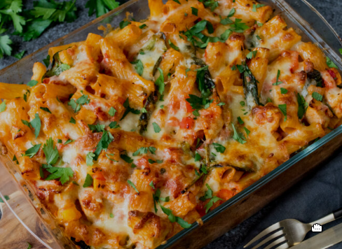

Chicken and Bacon pasta-bake

This is a delicious chicken and pancetta, creamy, pasta-bake with leek and white wine!
Ingredients
- Chicken - 500g
- Leek - 1 large
- Garlic - 3/4 cloves, diced
- Pancetta ham - One packet
- Onion - 1 large
- Chicken stock - 500ml
- White wine
- Frozen peas
- Penne pasta
- Ricotta cheese
- Parmesan cheese
Method
- Heat some oil in a large frying pan or skillet on medium to high heat
- Add the onions and garlic, and cook for 3-5 minutes or until garlic is fragrant and onion is translucent
- Add the leek and cook for a further 2-3 minutes, or until softened and reduced
- Add the pancetta ham and chicken, and cook for around 8-10 minutes
- Add some white wine (opitonal) to de-glaze the pan, and add the chicken stock
- Cook for around 10-13 minutes or until the mixture has reduced by two thirds, then add the peas and
two thirds of the rictotta
- Cook the pasta according to packet instructions, however make sure to under-cook by around a minute to
stop the pasta from over-cooking
- Add the pasta to the chicken and leek mixture, and mix before covering with parmesan and the remainder
of the ricotta cheese. Cook for 20 minutes at 200c
- Serve and enjoy!